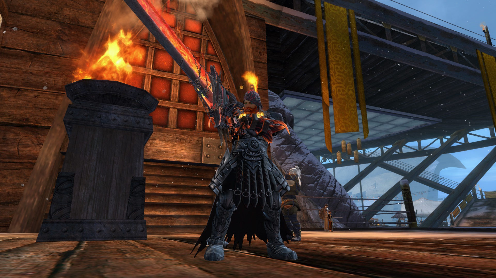

About Us
Havok Unit is a growing PvX guild based in Crystal Desert. We are all family to one another and are always looking to bring new talent aboard. From veteran players who've played from pre-release to someone who bought the game yesterday, we have all spectrums of experience to play along with.
We run daily events for both PvE and PvP so there is always something to do with fellow plunderers and when there isn't any schedule content feel free to ask for help running story progression, spreadsheet, or clearing a map!
HvK stresses for servant style leadership and avoids toxic environments that “demand” you to play a certain way. We don't mind working with you to get your play style maximizes. From training raids, to WvW tactics we are willing to teach and bring you along side of us.
Head over to the contact page and reach out to one of our officers and come try us out! We are an adult founded and lead guild, our leaders are dedicated to generating content and assisting where we are able. So don't be a stranger and reach out to us!
Contact us in-game!
Silent Dylan - Leader : Absuuurrd.1850
Raid Queen Sally - Co-Leader : Salicia.5943
Legendary Dee - Wild Card Officer : LegendaryDee.6054
Havok Posts

Havok Unit's fearless Guild leader wondering how his blade works.